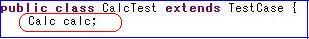
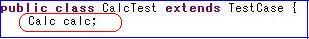

KikainekoMocker
テストケースの書き方
この例では、setUpメソッドでインスタンス化していますが、特にsetUpで行う必要はありません。
また、逆にtearDownメソッドはオーバーライドしないで下さい。
機械猫モッカーのためのテストケースの書き方
機械猫モッカーは通常のテストケースを食べて解析しますが、いくつかテストケースを書く上でのポイントがあります。
（細かい内容に関しては、仕様説明をご覧下さい）
サンプルプログラムを用いて、簡単なポイントを説明します。
テストのサンプルのCalcTest.javaを用います。
（細かい内容に関しては、仕様説明をご覧下さい）
サンプルプログラムを用いて、簡単なポイントを説明します。
テストのサンプルのCalcTest.javaを用います。
擬似クラス対象指定
機械猫モッカーは擬似クラス対象、つまりどのクラスを生成するかの指定をテストケースのフィールドで判断しています。

このようにすると、機械猫モッカーはCalc.javaを生成するのだと判断します。
また、ここで「SomeInterface calc;」のようにインターフェースを指定すると、そのインターフェースを実装した擬似クラスを生成します。
あるいは「SomeSuperClass calc;」のようにでスーパークラスを指定すると、そのスーパーークラスを継承した擬似クラスを生成します。

このようにすると、機械猫モッカーはCalc.javaを生成するのだと判断します。
- 指定するフィールドは必ず一つだけにしてください。
- ここでインスタンス化、null値代入などはしないで下さい。
また、ここで「SomeInterface calc;」のようにインターフェースを指定すると、そのインターフェースを実装した擬似クラスを生成します。
あるいは「SomeSuperClass calc;」のようにでスーパークラスを指定すると、そのスーパーークラスを継承した擬似クラスを生成します。
setUpメソッド・オーバーライド
このsetUp・tearDownに関する制限はいずれ取り除かれます
setUpメソッドは必ずオーバーライドしてください。この例では、setUpメソッドでインスタンス化していますが、特にsetUpで行う必要はありません。
また、逆にtearDownメソッドはオーバーライドしないで下さい。
メソッドの返り値はassertEqualsで設定
対象クラスのメソッドが返り値を持つ場合（つまりvoid型じゃない場合）はassertEqualsで指定してください。
（当然ですが、void型はassertEqualsに入れないで下さい）

assertEquals以外、例えば
int i = calc.get();
のように書くと、
機械猫モッカーはどのような値を返せば良いのか判別できないためエラーになります。
（当然ですが、void型はassertEqualsに入れないで下さい）
assertEquals以外、例えば
int i = calc.get();
のように書くと、
機械猫モッカーはどのような値を返せば良いのか判別できないためエラーになります。